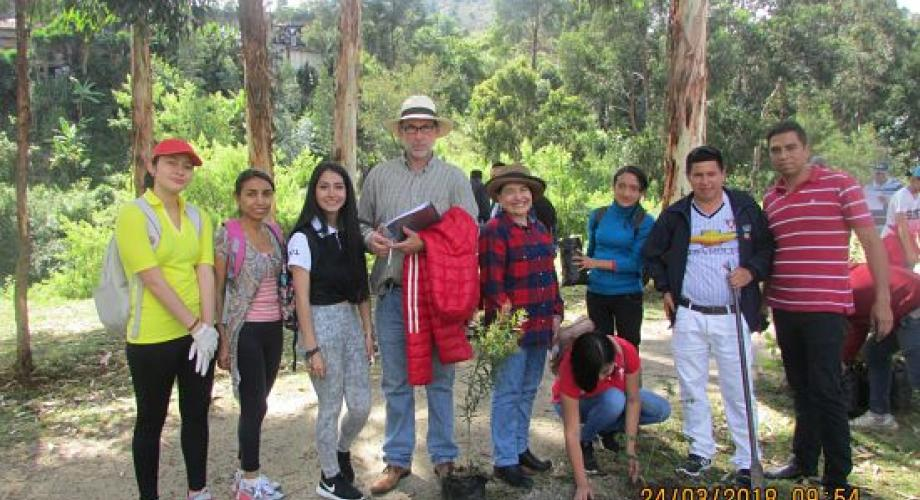

¿Por qué elegir este programa?
- 📘 Formación en desarrollo humano, gestión social y participación ciudadana.
- 🌎 Prácticas reales en comunidades rurales y urbanas.
- 🤝 Alianzas con ONGs, municipios y organizaciones sociales.
- 🎓 Docentes con experiencia en proyectos de impacto.
Beneficios que te conectan con tu vocación
🌱 Enfoque Humanista
Formación integral que combina teoría, práctica y sensibilidad social.
🌍 Educación Intercultural
Aprende a trabajar respetando la diversidad cultural del Perú.
💼 Proyectos con impacto
Participa desde el primer ciclo en acciones reales en comunidades vulnerables.